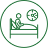

Сон
-
Сеанс кинезиологических практик

-
Лечение через движение, в основе которого лежит холистический (комплексный) подход. Метод предполагает
сочетание определенных движений, подобранных строго индивидуально, на основе диагностической карты тела.
Подобный комплекс направлен на стабилизацию одних частей тела и мобилизацию других. Постепенное обучение
правильным движениям приводит к нейрорефлекторному восстановлению костно-мышечной системы, благодаря
чему
развивается способность двигаться правильно и безопасно.
-
RESET
- Авторская методика «Энергетическая система восстановления
сбалансированной работы височно-нижнечелюстного сустава Филиппа Рафферти». Фактически, это
антистрессовый миомассаж определенных областей лица и челюстного сустава. Основан на некоторых
особенностях работы лимбической коры головного мозга – области, отвечающей за рефлексы. Специфическое
воздействие на височно-нижнечелюстной сустав обладает антистрессовым эффектом, устраняя симптомы
физического и эмоционального стресса
-
Медитация
- Особая терапевтическая методика, основанная на техниках, применяющихся
в духовных и целительских практиках. Позволяет снять негативные установки, подавляющие
психоэмоциональное состояние человека и блокирующие работу естественных механизмов самооздоровления.
Гармонизирует мышление, нейтрализует страхи, устраняет последствия стрессовых и травмирующих ситуаций.
Медитация характеризуется определенным состоянием – остановка внутреннего монолога, безмятежность,
внимательное отношение к самому себе (самосозерцательность), благожелательное восприятие проявлений
своего внутреннего «я» (безусловное принятие себя), безоценочность внешних событий.
-
Эриксоновский гипноз
-
Это «мягкий», недирективный гипноз, который использует способность человека к непроизвольному
гипнотическому трансу — состоянию психики, в котором она наиболее открыта и готова к позитивным
изменениям. В этом состоянии открывается доступ к внутренним ресурсам, забытым человеком, но сохраненным
в его бессознательном.
-
Транскраниальная магнитная стимуляция (ТМС)
- Физиотерапевтический метод лечения, основанный на способности
кратковременных магнитных импульсов оказывать возбуждающее/тормозящее воздействие на кору головного
мозга. Таким образом регулируется функциональное состояние нейронов, что позволяет нормализовать
нейромедиаторный баланс и, как следствие, улучшить деятельность центральной нервной системы (ЦНС). В
результате наблюдаются позитивные перемены в физическом самочувствии и психологическом состоянии –
вплоть до значительного повышения работоспособности и устойчивости к стрессовым ситуациям.
-
Ксенонотерапия
-
Современный метод лечения, основанный на применении инертного газа ксенона (Xe) высокой степени очистки.
Ксенон абсолютно безвреден для организма, нетоксичен, не вызывает аллергических реакций и не имеет
противопоказаний. Основными клиническими эффектами ксенонотерапии являются: нормализация сна, улучшение
настроения после процедуры, снятие невротических и неврозоподобных состояний, повышение
работоспособности
и жизненного тонуса, устранение синдрома хронической усталости, купирование болевых синдромов, в том
числе мигреней, улучшение функции сердечной мышцы и головного мозга.
-
Спектральная фототерапия (СФТ)
-
Данный метод доставки необходимых микроэлементов к пораженному органу с помощью мультиспектральной
энергии света сочетает принципы фототерапии и рефлексотерапии. Лечебный эффект достигается за счет
насыщения организма определенными микро- и макроэлементами, которые участвуют во всех обменных
процессах, обеспечивая нормальное функционирование организма.
-
Составление индивидуального транса
-
Консультации врачей-специалистов
-
Невролог, сомнолог, психолог, специалист по медитации, кинезиолог
-
Нейрологический check-up
-
Специальное комплексное обследование позволяет оценить протекание основных процессов организма, влияющих
на работу нервной системы и скорость повреждения (старения) мозга. Оценивает нутритивный статус (наличие
микроэлементов и витаминов), интоксикацию и состояние антиоксидантной системы, гормональный фон, степень
дисбактериоза и другие параметры. Данные тесты помогают подобрать индивидуальное лечение при нарушениях
сна, памяти и внимания, депрессивных эпизодах и других расстройствах или составить персональную
стратегию
профилактики нервных заболеваний.
-
Респираторный мониторинг Somnocheck
-
Исследование дыхательной системы во время ночного сна. Позволяет диагностировать осложненный храп,
остановки дыхания во сне, снижение концентрации кислорода в крови. Процедура проводится с
применением
легкой диагностической системы, позволяющей проводить полное обследование нарушений дыхания и храпа
во время ночного сна пациента. Дополнительно аппарат позволяет регистрировать различные виды
микропробуждений, чтобы установить наличие или отсутствие нарушений структуры сна.
-
Программа «Антистресс»
-
Комплекс лечебно-профилактических мероприятий, направленный на глубокую психологическую и
эмоциональную разгрузку, достижение ресурсного состояния. Восстанавливает психоэмоциональные ресурсы
и способность к интенсивной деятельности. Устраняет синдром психологического выгорания, подавленное
настроение, тревожность, страхи. Снимает последствия стрессов и нормализует сон. Улучшает
когнитивные
функции головного мозга: внимание, память, восприятие и обработка информации, построение и
осуществление сознательных действий.